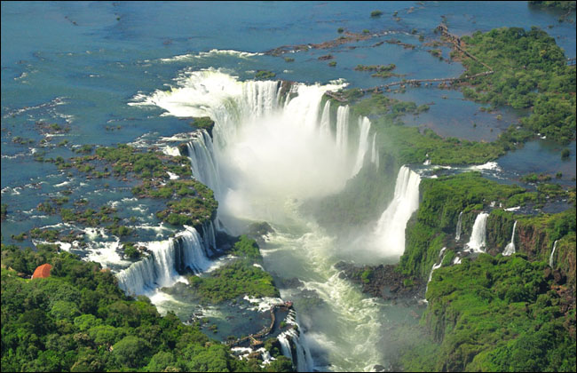
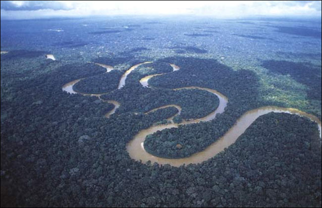
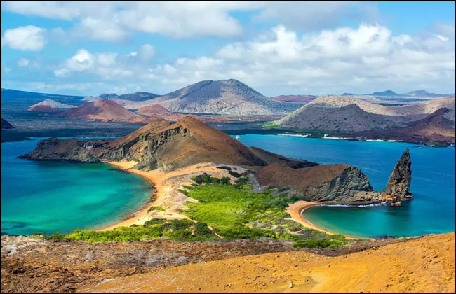
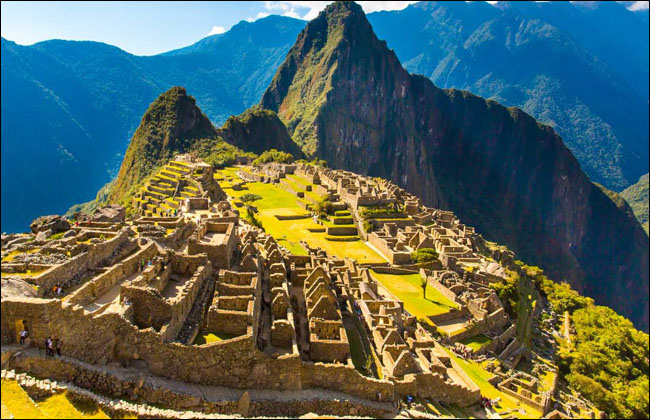
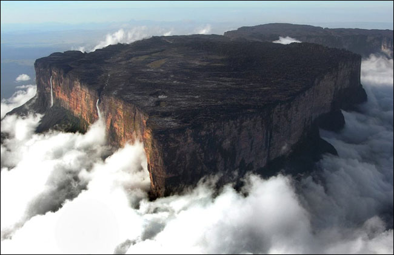

SOUTH AMERICA
-

Iguazú Falls - Argentina
Iguazú Falls is composed of the largest waterfall system globally and the Iguazú River flows through Brazil (Argentina possesses most of the sides that the falls are on).
-

Amazon River - Brazil
The massive Amazon River has an average discharge rate of approximately 209,000 cubic meters per second and is defined by some as the longest river in the world. Is within tropical rainforests with some of South America's most diverse wildlife populations: jaguars, anacondas, caiman, capybara, etc.
-

Lauca National Park - Chile
Located within the world's longest mountain range, the Andes, is Lauca National Park (far north in Chile). The park has some volcanic formations, archaeological sites, and has a range of species that reside there: cougars, llamas, flamingos, etc.
-

Galápagos Islands - Ecuador
Well known for its giant tortoises, black iguanas, manta rays, and a variety of local marine species. Surging tourism here is feared to harm the ecosystem, so authorities have set visiting restrictions over time. Composed of a network of 19 islands.
-

Machu Picchu - Peru
2,430 meters above sea level upon a mountain ridge in southern Peru is a 15th-century citadel of Inca descent. Believed by archaeologists to have been built for the Inca emperor Pachacuti.
-

Mount Roraima - Venezuela
Mount Roraima rests within the corner (southeastern region) of Venezuela's 12,000 square-mile Canaima National Park and is the highest peak within the highlands of Guyana.